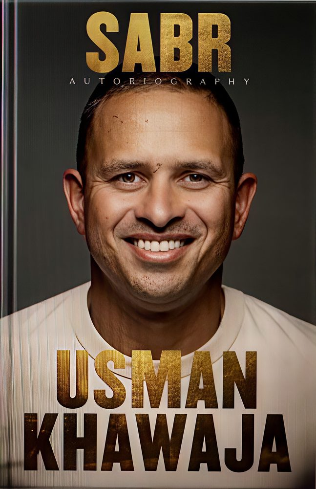

ICU and You · ICU Book Club · Number 4
Usman Khawaja, 2026 — everybody went straight to chapter 17. The chapter that matters is number 6, and almost nobody has mentioned it
Usman Khawaja. Sabr: Finding my way in cricket and life. Penguin, 10 November 2026. 448 pages, hardback, and also an ebook and an audiobook read by the author. The chapter this review is about is number 6, and it begins on page 45.
At the publisherNot an affiliate link, and nobody has asked me to write this.
Books that have made a difference to how we teach, train or practise in intensive care. Not all of them are medical books, and this one is not a medical book at all — it is a cricketer’s autobiography, and it contains one of the best accounts of a difficult diagnosis I have read anywhere.
Everyone went straight to chapter 17. I did too.
Then I kept reading, and found the chapter nobody is talking about. It is chapter 6, it is called “Rheumatoid arthritis”, and I think it is the most valuable thing in the book.

My own copy, and my own photograph of it.
Sabr is Usman Khawaja’s autobiography, and he wrote it himself. No ghost. You can tell, and that is, in some ways, a compliment. The sentences are his, the jokes are his, and the occasional lurch is his too. A professional would have planed all three of them smooth. I am glad nobody did.
For readers who do not follow the game: Khawaja is one of the finest batsmen Australia has produced in the past twenty years. He retired from Test cricket in January, at the Sydney Cricket Ground, which is the same ground where he made his debut fifteen years earlier. He was born in Islamabad and came to New South Wales as a four-year-old, and when he walked out at the SCG in 2011 he became the first Muslim, and the first Pakistan-born player, to play Test cricket for Australia.
I love cricket. I have never been able to explain why to anyone who doesn’t, and the older I get the less I attempt it. The closest I can manage is that the game mirrors life more faithfully than any other I know. It is long. It is mostly waiting. It offers a great many ways to fail and only a few to succeed. You can do everything right and still receive a ball that cannot be played. You can do everything wrong and survive the over. It rewards patience and punishes the loss of it, and it is played by eleven people who are, when it finally matters, entirely alone.
Sabr, as it happens, is Arabic for patience. The enduring kind. The title is doing more work than the cover lets on.
Chapter 17 is “Sandpaper”, and it is why the book has saturated every medium we have, exactly as the events themselves did eight years ago. It is interesting. It is not, in any way I could find, a clarifying document.
The author skates past I knew, and did not say so until now to we all knew, and keeps going. Ambiguity rules. Hints and allegations abound, and most of them are hints.
Again for those who have never watched a session of it. In March 2018, in Cape Town, an Australian player named Cameron Bancroft was filmed rubbing one side of the ball with a piece of sandpaper he had carried onto the field in his pocket. Scuff one side of a cricket ball and it moves differently through the air, which is worth a great deal to the bowlers. The captain admitted he had known about the plan beforehand. Cricket Australia investigated and handed down its sanctions four days later.
Twelve months out of the game for the captain and the vice-captain, nine for Bancroft. For a piece of sandpaper. Even people with no sympathy at all for what was done thought the punishment was out of proportion to it, and said so loudly — among them several former captains and the players’ own association. The investigation was reopened three years afterwards, and the question it never satisfactorily answered is the one still being asked today: who else knew? That is the question this book has walked straight back into, which is why it is in firestorm mode as I write.
So why can’t we get enough of it? Because it is Shakespearian, and I mean that as a description rather than as praise for the prose. Look at what is tangled together in there.
Truth, half-truth, omission and lie, and their antecedents and their consequences. Crimes and misdemeanours, and knowing which is which. Doing wrong, and getting caught doing wrong — not the same offence, though we go on confusing them. Self-preservation against wider solidarity. Jealousy and rivalry. Mateship and loyalty. Guilt and innocence and every shade in between. Agreements and understandings, then secondary agreements and misunderstandings. Cheating. Knowing. Memory and its frailties. Cultural perception and cultural misperception. Decisions taken on emotion and defended with reason afterwards. Crisis management, and its opposite. A slow train wreck running over years. Shutting down, and coming out.
This is the thing I keep coming back to about cricket: the game mirrors life, and that saga mirrors it again and again, which is why nobody can leave it alone.
Now. Chapter 6.
He is twenty-two or so. This is the end of the 2000s, a year or two before any of us had heard of him. He has just made his maiden first-class hundred, the season is over, and it is raining. He loves running in the rain, so he puts his boots on and goes out for the biggest run of his life, fifteen kilometres, and comes home feeling immortal. Two days later he flies to America, sits for hours with his knee jammed up against the seat in front of him, and gets off the plane with a knee like a small melon.
Then four doctors in two countries fail to work out what is wrong with him.
The first prescribes a muscle relaxant so strong he sleeps eighteen hours a day. A sports clinic scans the knee, finds nothing, drains a startling volume of fluid, and sends him off cured — until the following evening, when the fluid comes back out of nowhere. Home in Sydney, the state physio has no idea. One of the country’s leading sports doctors has no idea. An orthopaedic surgeon looks at the scans, scans again, operates, looks inside with a camera, and tells him afterwards that the knee is structurally perfect and entirely intact.
Which it was. That is the whole point, and it is why everybody missed what turned out to be the definitive diagnosis: rheumatoid arthritis.
What the story shows us, first, is how convincingly this disease can arrive wearing somebody else’s clothes. Every element of that history pointed at a mechanical injury: a big run, a long flight, a swollen knee, a young athlete. Rheumatoid arthritis most often begins between thirty-five and sixty-four, and it is about one and a half times more common in women. He was twenty-two and male. The clinicians who reached for an injury were not being stupid. They were playing the percentages, and the percentages were wrong.
Second, it shows us why the pictures were no help. Early rheumatoid arthritis is a disease of the synovium, the lining of the joint. It is inflammation, not architecture. A structural scan asks a structural question and gets a reassuring structural answer, and reassurance of that kind is the most expensive thing in medicine. Four people looked at the building. Nobody was looking at the weather inside it.
Third — and this is the sentence I would frame — the answer had been sitting in his blood the whole time. Two weeks into a hospital admission nobody could explain, it was the orthopaedic surgeon who said it: your CRP and ESR are off the charts consistently, and they should have settled by now. Two inflammatory markers, refusing to behave. That observation turns the entire chapter, and it gets about one line.
The rheumatologist, in Ryde, took roughly ninety seconds. Needle into the joint, discoloured fluid filling one vial and then a second, cortisone in behind it, and a name for the enemy at last. You have rheumatoid arthritis. He is twenty-two and he has just been told he has what old people have. His father does not believe it either, and takes him for a second opinion, which is a reasonable thing for a frightened parent to do and which confirms the first.
Knowing your enemy is not the same as beating it. But it is the precondition.
What follows is the clearest account of the modern treatment ladder I have read in a book written for the general public, and he climbs every rung of it.
Intra-articular cortisone first, which works, and buys time rather than remission. Then prednisone daily. Then methotrexate, which his doctor introduces with the warning that it is used mostly in chemotherapy — true of the drug, and worth saying plainly that the rheumatology dose is a small fraction of the oncology one, taken once a week rather than daily, with folic acid alongside it. The distinction matters enormously to patients, who hear “chemotherapy” and stop listening.
And none of it was enough. His knees settled. His elbow — his throwing arm, his dominant arm — still “felt like daggers” when he tried to straighten it.
Which brings him to the biologics, and to the part of this chapter that will interest anyone who has ever argued with a formulary.
Etanercept and adalimumab both block tumour necrosis factor, a cytokine that sits near the centre of the inflammatory cascade in this disease. He reports being told he could not have one until he had taken the conventional drugs for longer, demonstrated in black and white that they had failed, and been screened for hepatitis B — at which point the government might subsidise it. Until then the price was four thousand dollars a box, a box a month, against a playing contract of fifty thousand a year. The arithmetic is brutal and he does it out loud.
The screening before a TNF inhibitor is wider than hepatitis B. Tuberculosis above all, with a chest X-ray and either a skin test or an interferon assay, because these drugs can wake a latent infection up.
And the usual adult dose, fifty milligrams weekly under the skin, is expected to show something within about four weeks, with a formal look at twelve.
Which makes what happened next remarkable. He injected on a Tuesday. The next morning the pain was a tenth of what it had been for four months. Twenty-four hours after the injection he was swinging a golf club in the backyard with no pain at all, and then trotting twenty metres up the lawn to prove it to his father, who stood there and said Alhamdulillah with a tear running down his cheek.
I want to be careful here, because I would rather be accurate than dramatic. A response inside twenty-four hours is at the very fastest end of what these drugs do, he had other anti-inflammatories already on board, and a single case can never separate the drug from everything else that is happening in a body. But I do not think the timeline is the point of that passage. The point is a young man in a backyard discovering that his life has been handed back to him, and his father watching it happen.
He has taken it for fifteen years since, now spread to about one injection a fortnight — a stretching of the interval that is a recognised thing to do in sustained remission, and a thing to do with your rheumatologist rather than on your own initiative.
Two things in this chapter stayed with me longer than the pharmacology.
The first is that David Gilbert (“Lizard”), the chief executive of Cricket NSW and a Test bowler himself in his day, heard what was happening, walked up to him, and said: Don’t worry, Uz. We’ve got you. We’ll pay for this drug. No timeline, no conditions. Khawaja writes that the gesture still lies deep in his heart, and that when he finally told Gilbert what it had meant, Gilbert had no idea. That is worth sitting with for a moment. The things that change people are almost never the things we think we are doing.
The second is that he told nobody. Not his team-mates, not the press, not for the better part of twenty years — and the reason is one that every reader of this site will recognise from their own ward. He did not want people making excuses for him. And he did not want it used against him if he got injured. He writes that as far as everyone was concerned he was perfectly fine, and that with the drug he genuinely was, so that was that.
Four months bedridden cost him every bit of muscle in his legs — he says he wishes he had photographed them, because they were twigs — and bought him a long run of soft-tissue injuries as the price of coming back. He writes that he thinks the whole episode was his sabr training, arriving early, for what was coming later.
Which leaves the question this chapter actually poses, and it is a bigger one than cricket.
We are forever telling these stories as triumphs achieved in spite of the obstacle. I am no longer sure that preposition is right. How often is the elite level in sport, or in medicine, or in anything else, reached not in spite of the thing that went wrong but in some real sense because of it? Because of what four months flat on your back teaches you about patience that no coach ever could?
That is the story in this book. It has had almost none of the attention.
And here is the part I like best. No tampering is required. Nothing in chapter 6 needs managing, or lawyering, or a careful re-reading to work out who knew what and when. It is a young man, a disease that hid in plain sight, a doctor who read two numbers correctly, a drug that worked, and a father in a backyard. It is a truth to be embraced and a story to be celebrated, fulsomely.
Without ambiguity.
mjs
On the disease and its treatment, both written for patients rather than clinicians, and both free: the Australian Institute of Health and Welfare’s page on rheumatoid arthritis, for how common it is and who it happens to; and Arthritis Australia’s medicine information sheets, which cover methotrexate and etanercept in plain language, including the screening required before a biologic is started.
Tell me about a diagnosis that hid in plain sight.
What turned this story was two numbers that refused to settle, and the person who noticed was a surgeon rather than a physician. So: the one that took four opinions. The one sitting in a result nobody went back and re-read. Yours, a patient’s, or one you made late — or one you made early, when everybody else had already moved on. What was the thing that finally turned it?
How you are credited is entirely your call — by name, by initials, or not at all — whether you write the piece or I do, and whether I quote you or simply say who sent something in; nothing of yours goes up with your name on it unless you have said yes.
The button opens a reply straight to me. If your device blocks it, write to icuandyou@icloud.com instead.